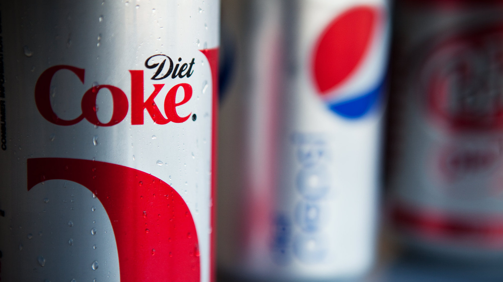

Soda
Three of the most popular soda categories with caffeine are:
Cola
Coca Cola could be considered the earliest "energy drink" - although not marketed as such - it was one of the first carbonated drinks to contain caffeine. The drink was first made in 1886 - where it supposedly had a very small level of cocaine in it - due to the extract of coca leaf being an ingredient. However, given that the formula has always remained secret - this may simply be an embellishment.
Diet soda
Diet Coke is one of the most-caffeinated sodas with 76mg of caffeine per 12-ounce can. It ranks ahead of Diet Pepsi, which has the same amount of caffeine as regular Coca-Cola (34mg per 12-ounce can).
Flavored sodas

Dr. Pepper, one of the most-popular flavored sodas, has 68mg of caffeine in a 20-ounce bottle. Mountain Dew is one of the most-caffeinated sodas with 91 mg, second to only Pepsi Zero Sugar (115mg per 12-ounce can).